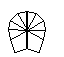
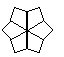
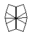

Yoyleberry Method
Step 1: Get into Barrel-Barrel. Can always be done in 6 or fewer slices. A beginner method to do this step is to get all 8 edges next to each other, then do / U2 D4 /.
  → 
Step 2: Edge Checkering: The 4 edge pairs need to be all yellow-white or all white-yellow. Requires 12 algorithms (9 excluding mirrors).